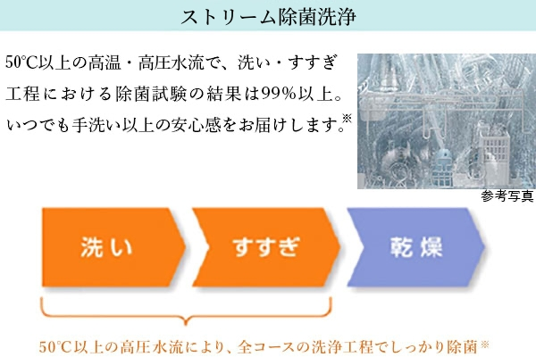
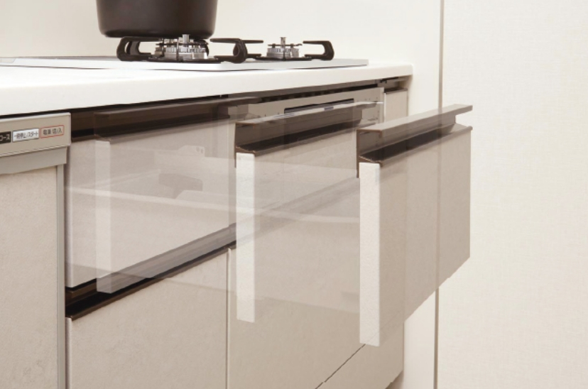
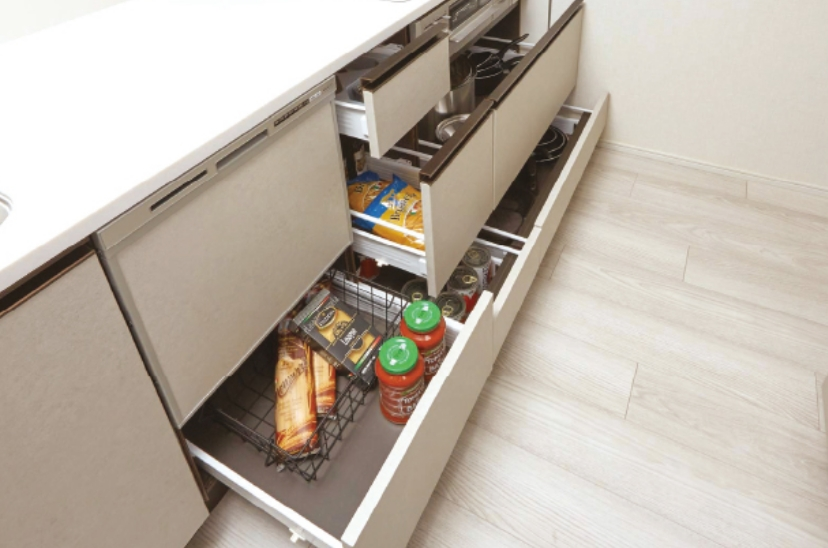
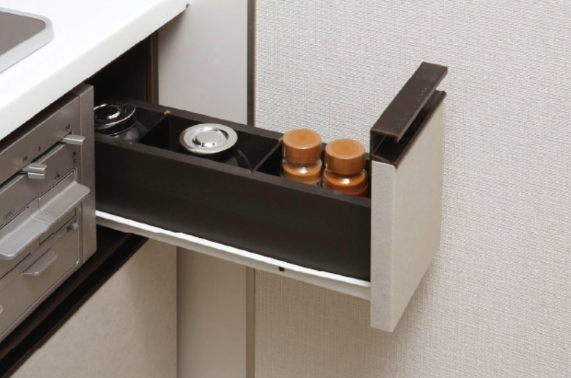
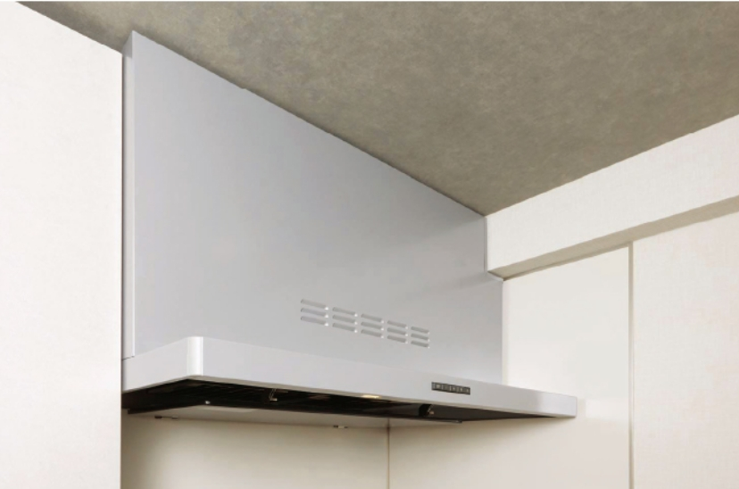
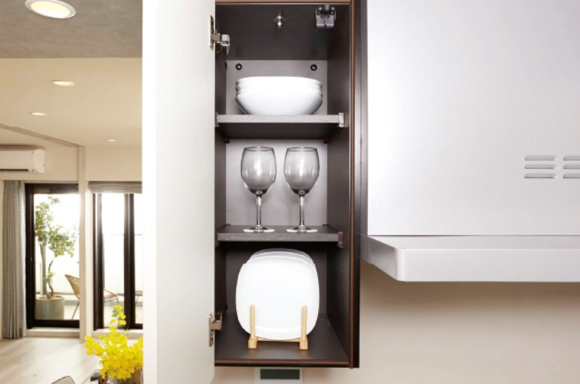
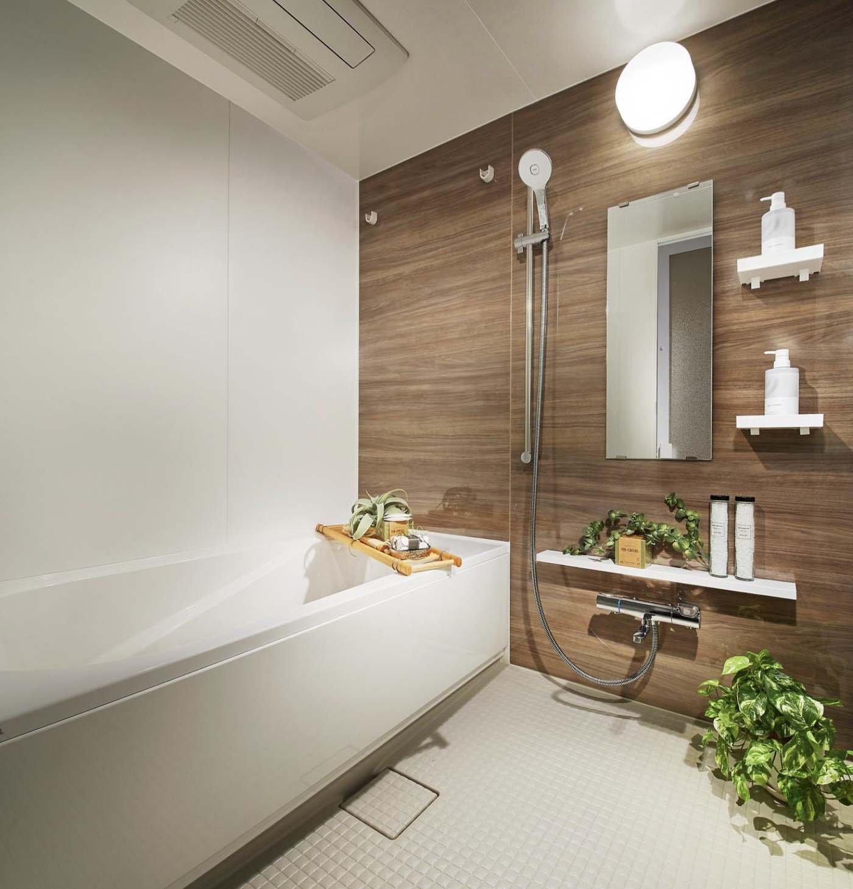
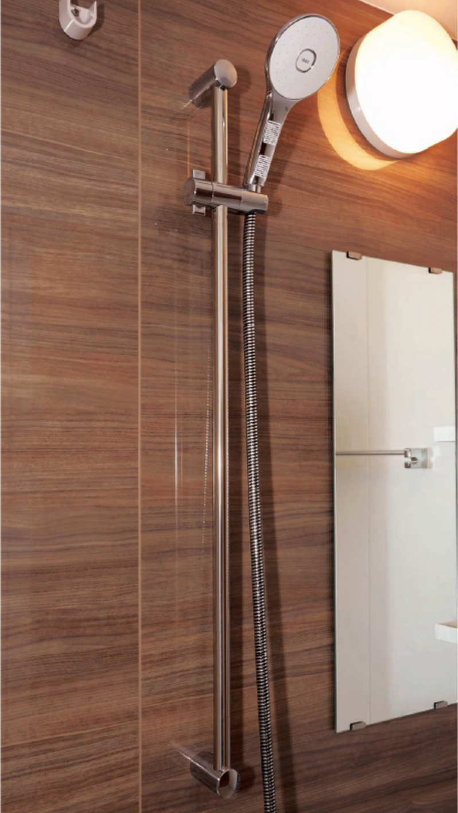
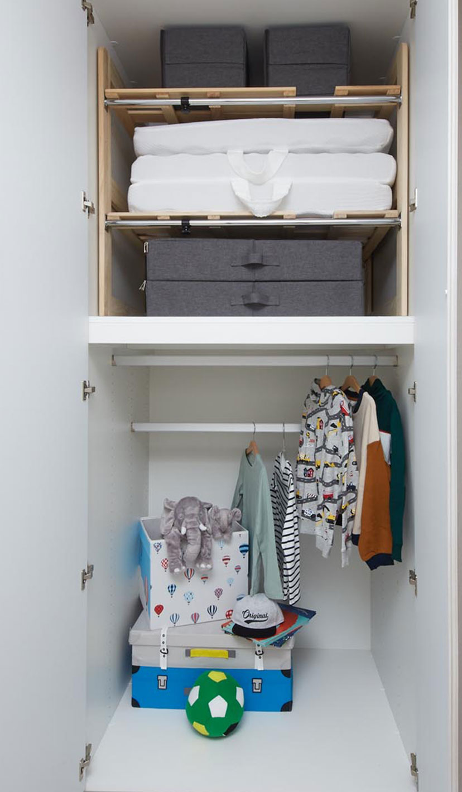
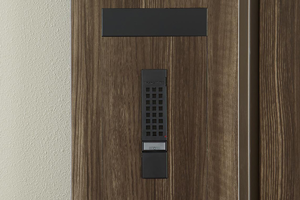

リビング・ダイニング
-

人造大理石キッチン天板
汚れにくくキズつきにくい機能性の高い、人造大理石を採用しました。
-
浄水器一体型水栓
浄水機能を搭載したシングルレバー混合水栓。便利なヘッド引き出し式です。
-
ワイドシンク
洗い物がしやすく料理の下ごしらえに重宝するワイドシンク。水はね音を軽減する静音仕様です。
-
水無し両面焼グリル付ガスコンロ
キズがつきにくいハイパーガラスコートトップ。汚れが溜まりにくい、すっきりとしたフェイスデザインです。
-
-
-

ビルトイン食洗機
スイッチひとつで洗浄から乾燥まで自動で行い、家事の負担を軽減。節水にも貢献します。
※「乾燥」のみの設定では除菌できません。除菌の試験内容●試験機関名（一財）北里環境科学センター●試験方法：寒天平板培養法●試験成績書発行年月日：2021年1月21日●試験成績書発行番号：北生発2020＿2654号●除菌方法：加熱高温水噴射方式●除菌対象：庫内食器類●試験結果：99％以上の除菌効果（1種類のみの菌で実施。除菌効果は、食器の量や位置、汚れの程度により異なります）。
-
-
 ソフトクローズ収納
指挟みなどのケガを抑制し、穏やかに閉まるソフトクローズ機能を採用しています。
-
 スライド収納
ソフトクローズ機能を利用したスライド収納は、出し入れもしやすく、お掃除も容易です。
※シンク下部除く
-
 コンロ横キャビネット
調味料等を収納できる小引き出し。コンロの近くにあるので、調理しながらサッと取り出せます。
-
ホーローキッチンパネル
油汚れなどが拭き取りやすく、熱や湿気に強いホーローキッチンパネルを採用しています。
-
 レンジフード
汚れが染みこみにくく、油汚れもカンタンに拭き取れるホーロー整流板付きレンジフードです。
-
 キッチン上部吊り戸棚
食器だけでなく、キッチン用品等も収納できる吊り戸棚を設置しています。
-
-
リネン庫
タオル類やサニタリーアイテムなどをすっきりとしまえるリネン庫を設置しています。
-
三面鏡裏収納
三面鏡裏は、アメニティグッズなどをすっきりとしまえる収納スペースとしています。
ボウル一体型カウンタートップ
天板との継ぎ目がないボウル形状と光沢仕上げの天板が上質感を演出します。
-
三面鏡裏収納
三面鏡裏は、アメニティグッズなどをすっきりとしまえる収納スペースとしています。
-
ボウル一体型カウンタートップ
天板との継ぎ目がないボウル形状と光沢仕上げの天板が上質感を演出します。
-
ソフトクローズ収納
閉まる直前にスライドのスピードが落ち、静かに吸い込まれるようにクローズします。
-
ドライヤーフック
使いたいときにサッと取り出せて、機能的にしまえるドライヤーフックを三面鏡内に設置しています。
-
シングルレバー混合水栓
水栓のヘッド部分を引き出せる水栓を採用。ボウルのお手入れにも便利な仕様です。
-
ヘルスメータースペース
置き場所に困るヘルスメーターをすっきり収納できるスペースを確保しています。
-
フランジレス排水栓
お手入れのしやすい、排水口金具がなく水はけの良い形状のフランジレス排水口を採用しています。
-
三面鏡下ホーローパネル※1
三面鏡の下には、ホーローパネルを採用しました。ミラーにも選択が可能です。
※1：ホーローパネルとミラーが選べます。
-
 -
キレイドア
汚れがたまりやすいガラリは、浴室側のゴムパッキンをなくしてタテ枠に配置。お掃除しやすいフラット形状です。
-
収納棚（2段）
取り外して簡単にお手入れができる収納棚を設置しています。
-
-
エコベンチ浴槽
半身浴や水道・光熱費も節約できるエコベンチ浴槽。浴槽形状は3種類からセレクト（無償・期間限定）いただけます。
-
エコアクアシャワー
（手元止水スイッチ付）止水・吐水の切替が容易な手元止水スイッチを採用し、空気をたっぷり含んだ水質が心地良い節水シャワーです。
-
くるりんポイ排水口
浴槽のお湯排水時に、排水口内に「うず」を発生させてキレイに洗浄し、ゴミや毛髪も捨てやすくまとめます。
-
キレイサーモフロア
冬でも足裏の冷たさを感じにくい素材。水はけがよく、汚れをはじく表面でお手入れが容易です。
-
-
収納棚（2段）
取り外して簡単にお手入れができる収納棚を設置しています。
-
-
ドア外タオル掛け
ドア外にはバスマットやバスタオル等も掛けられ、入浴の際に便利なタオル掛けを設置しています。
-
とるピカスリムカウンター
取り回しのしやすい大きさで、小物等を置くのに便利。カウンターを取り外してお手入れができます。
-
浴室暖房乾燥機
浴室の暖房をはじめ、洗濯物の乾燥や防カビにも効果を発揮します。
-
ランドリーパイプ
浴室で衣類を乾燥する際に使用できるランドリーパイプをご用意しています。
-
-
 シャワースライドバー
シャワーヘッドをお好みの高さに設定できるスライドバーを採用しています。
-
浴室暖房乾燥機
浴室の暖房・洗濯物乾燥・防カビに効果を発揮します。
ランドリーパイプ
浴室で衣類を乾燥する際に使用できるランドリーパイプをご用意しています。
-
-
トイレ吊戸棚
ペーパー類やトイレ用小物などの収納に便利な、吊り戸棚を標準装備しています。
手洗いカウンター／
キャビネットトイレを快適に清潔にご使用いただける手洗いカウンターを設置。サイドには収納スペースを配し掃除道具もキレイに収納でき室内空間がスッキリ。
-
壁付きリモコン
操作性、清掃性の良さにも配慮したシンプルでフラットな壁付きリモコンを採用しています。
フチレス形状
便器のフチをなくしたフチレス形状により、掃除もラクラクです。キズや汚れに強いハイパーキラミックスが銀イオンパワーで細菌の繁殖も抑えます。
-
-
-
-
DOMAスペース
2WAY動線により、「うがい・手洗い」や「汚れ落とし」など生活空間を汚すことなく、洗面室へ直行できます。さらに、置き場所に困るベビーカーや折りたたみ自転車、アウトドア・スポーツ用品なども置くことができ、趣味などの愉しみが増え、より豊かな暮らしを演出します。
DOMAスペース
2WAY動線により、「うがい・手洗い」や「汚れ落とし」など生活空間を汚すことなく、洗面室へ直行できます。
さらに、置き場所に困るベビーカーや折りたたみ自転車、アウトドア・スポーツ用品なども置くことができ、
趣味などの愉しみが増え、より豊かな暮らしを演出します。
-
ウォークインクローゼット
大容量のウォークインクローゼットを採用。衣替え後の服もまとめて片付けられます。
-
 布団クローゼット
普段使わない季節物の布団や、来客用の布団などしっかり収納できる大型の収納です。
-
クローゼット
ワードロープを収納可能なハンガーパイプと棚を設けたクローゼットを設置しました。
-
参考写真
納戸
奥行きを十分に取った大容量収納。季節アイテムやアウトドア用品などをすっきりしまえます。
-
参考写真
納戸
奥行きを十分に取った大容量収納。季節アイテムやアウトドア用品などをすっきりしまえます。
-
参考写真
シューズインクローゼット
靴を履いたまま出入り出来るシューズインクローゼットを採用。沢山の靴をきれいに収納できます。
-
リビング・ダイニング収納
生活用品やお子様のおもちゃ、ご家族で共有するものなどを片付けるための収納スペースです。
※掲載の収納については、タイプにより採用しているものが異なります。また、大きさ・形状・仕様は住戸により異なります。詳細については図面集にてご確認ください。
-
リビング・ダイニング
-
-
スライドドア
リビング・ダイニングと隣り合う洋室の間にスライドドアを設置しました。開放すれば、広々としたリビングと一体の空間として。閉じればワークスペースや子ども部屋として、ご家族のライフスタイルに合わせてご利用できます。
-
※プランにより異なる場合があります。
-
-
-
CLOSE
-
OPEN
-
-
-
右出入口にした場合
-
左出入口にした場合
-
-
インターホンカウンター
リビング・ダイニングのインターホンまわりには、スマートホンやタブレット等の充電もできるコンセント付きカウンターを設置しています。
-
コンセント付き廊下収納
スティック型掃除機などの充電に便利な、コンセントが設置された玄関収納です。
-
-
コンセント付き玄関収納
電動自転車などの充電に便利な、コンセントが設置された玄関収納です。
-
バルコニー水栓
バルコニーにはプランター等への水やり等に便利な水栓を設置しました。
-
エコで快適な暮らしを
実現するために。
毎日使うエネルギーだからこそ、電力の「見える化」に加え、
電気・ガス・水道を効率よく使用できるよう様々な工夫を施しました。
-
各住戸の電気代を10％削減※1する、
高圧一括受電システム。電力会社から安価な高圧電力をまとめて購入。 低圧電力に変換してから各住戸に配電することで、電気料金を従来より10％削減しています（共用部を除く※2）
※1 専有部は東京電力エナジーパートナーの従量電灯B契約単価で計算、割引となります。（再エネ賦課金、燃料調整費除く）
※2 共用部は東京電力エナジーパートナーの従量電灯C、低圧電力契約単価での請求となります。（再エネ賦課金、燃料調整費除く） -
電力見える化サービス
「スマートメーター」を設置し、各住戸の電力使用量を「見える化」します。
-
ecoジョーズ
給湯機の排熱を効率よく利用。地球にも家計にもやさしい熱源機です。
-
参考写真
TES温水式床暖房
リビング・ダイニングの床には、部屋全体を足元から心地よく温めるTES温水式床暖房システムを採用しています。
-
参考写真
エネルック機能付
給湯リモコン給湯機で使用したガス・お湯の使用状況が確認できるエネルック機能付給湯リモコンを採用。省エネライフが実感出来ます。
-
概念図
複層ガラス
断熱効果が高いため暖房効率が高まり、光熱費を削減。温度差が大きい冬場も、カビの原因となる結露を抑え、室内の快適さを保ちます。
-
LED照明（専有部）
白熱電球より約40倍も長寿命なLED照明。環境はもちろん電気代も大幅に抑え、家計にも優しい照明です。
-
参考写真
パワーストリーム洗浄
強力な水流が便器鉢内のすみずみまで回り、少ない水でもしっかり汚れを洗い流します。
-
-
-
-
大8L便器に比べ、ECO5は3日で、おフロ1杯分以上※節約できます。
※おフロ1杯を180Lで計算
-
-
超節水トイレ
一般家庭内でトイレは使用水量が多く、全体の21％も使用しています。この貴重な水を大切に使うことを考え、強い洗浄力はそのままに従来品より大幅に洗浄水量を減らし、地球環境に配慮します。
-
24時間365日体制の
セキュリティシステム。
「リーフィアレジデンス相模大野ヴェール」では、
システムと人の目の両方による
24時間セキュリティ体制を実現。
さらに、トリプルセキュリティを構築することで
住まいの安心感を追求しています。
オンラインセキュリティによる
24時間遠隔監視システム
-
各種センサーがALSOK（綜合警備保障）ガードセンターにつながったオンラインセキュリティで、常に暮らしの安心を見守ります。万が一の場合には、ALSOK（綜合警備保障）ガードセンターに自動通報され、安全のプロが迅速に対応する24時間・365日体制でのセキュリティシステムを導入しています。
三段階のチェックで安心を高める
厳重なセキュリティシステム※セキュリティを強化するため、エントランス（風除室）、エントランスホール、住戸玄関ドアの三段階のセキュリティシステムを採用。住まう方の日々の暮らしを見守り、建物内への不審者侵入を招かない、安心感の高い住まいを実現します。
※メインエントランスからの来訪の場合のセキュリティシステムです。
-
概念図
-
本人認証を加えた
強固なキー複製対策システムを採用参考写真
カードの提示がないと鍵の複製ができないユーザーカードシステムを採用。カード提示という本人認証を加えることで安全性を高めました。
防犯カメラ
参考写真
不審者を監視する防犯カメラを敷地内の要所に設置。映像は常時録画され、一定期間保存されます。
-
-
録画機能付き
カラーモニター
インターホンエントランスの来訪者を映像と音声で確認してからロックを解除できます。受話器のないハンズフリータイプ。災害や防犯に役立つ非常通知ボタンなど、便利な機能も充実です。
-
 玄関インターホン
住戸玄関前にインターホンを設置。住戸前でも来訪者の音声で確認できます。
-
防犯サムターン
サムターン回しに対する防犯対策として、不正解錠を防ぐ効果のある防犯サムターンを、ダブルロックの2カ所共に採用しています。
-
鎌デッド錠
デッドボルトの鎌部が枠に引っかかるので、バールなどによる玄関ドアのこじ開けを困難にします。
-
面格子
共用廊下側の引き違い窓には面格子を設置し、防犯性を高めています。
-
ノンタッチキーシステム
鍵をキーリーダーにかざすだけでオートロックドアを解錠できるノンタッチキーシステムを採用しています。
※各住戸にノンタッチキー4本（予定）
-
参考写真
不正複製が困難な
ディンプルシリンダーキー複製が困難で耐ピッキング性の高いシリ ンダーキー。約5兆5,000億通りの錠違い で安心と安全を追求しています。
-
異常を感知・通報する
防犯センサー玄関ドアに防犯センサーを設置。異常を感知するとアラーム音が出て、警備会社に自動通報されます。
※1階及びルーフバルコニー付住戸の窓（FIX窓及び面格子付き窓は除く）にも防犯センサーが付きます。
住まう方の安心に
寄り添うために。
快適に暮らすためには
安心して過ごせることも大切な条件のひとつ。
「リーフィアレジデンス相模大野ヴェール」では
将来を見据えたサポート体制を
ご用意しています。
定期巡回サービス
専有部はお引渡し日※から、3ヵ月前後、1年前後、2年前後の3回、お住まいいただいているお客様へ不具合についておうかがいします。
施工会社や管理会社に任せるのではなく、定期巡回サービスは、小田急不動産が窓口となって行い、さらに巡回前にお客様へ不具合箇所をチェックする定期巡回用紙をお渡しし、事前に不具合をご確認いただくことで、漏れのない対応をいたします。
※ご購入者様の一人が最初にお引渡しを受けた日。
LEAFIA住設機器延長保証制度
ガスコンロや給湯機など、対象となる設備機器の故障に対し、お引渡しの日から10年間、、修理費用を回数無制限で何度でもサポートいたします。
※2年間のアフターサービス保証満了後にご利用いただけるサービスです。
住設機器延長保証の対象設備・補償内容は販売担当にご確認ください。

AIを活用したマンション管理※サービス※自然言語処理技術を活用
-
「リーフィアレジデンス相模大野ヴェール」では、管理会社である小田急ハウジングがこれからの時代に対応するAIを活用した管理サービス「ODALAVI」を導入いたします。スマートフォンから専用アプリで非対面でのさまざまな管理に関するお問い合わせにお応えいたします。外出時や管理員不在時でも24時間365日、多言語での対応が可能です。
- 24時間365日対応
-
多言語（日本語・中国語・
韓国語・英語）に対応可能
※お問い合わせいただいた内容は個人のスマートフォン上でしか保存されません。※短めに言語入力をお願いします。※サービス提供内容・形態は変更になることがございます。予めご了承ください。※ダウンロードやパケット通信料はお客様のご負担となります。
-